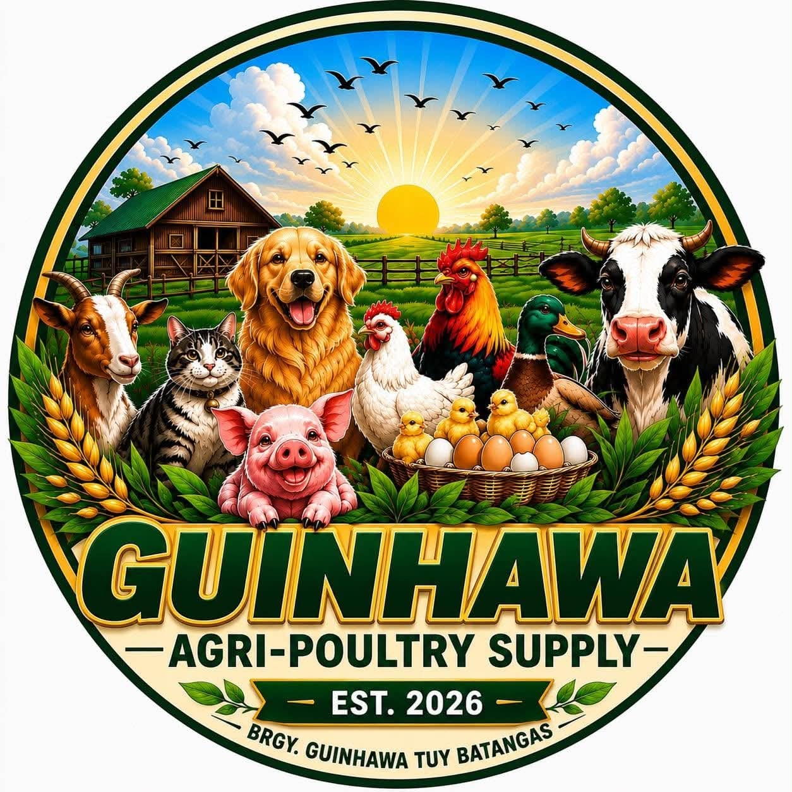
Guinhawa Agri-Poultry Supply
Guinhawa Agri-Poultry Supply provides quality feeds, veterinary products, vitamins, equipment, and other supplies for poultry, livestock, and pets.
We aim to help local raisers and pet owners get the products they need without having to travel far.
Explore Our ProductsGuinhawa Agri-Poultry Supply is a local business established on June 8, 2026, in Brgy. Guinhawa, Tuy, Batangas.
Our goal is to help poultry raisers, livestock owners, and pet owners by providing quality products and good customer service. We want to make it more convenient for our customers to get the supplies they need without having to travel far.
We offer feeds, veterinary medicines, vitamins, equipment, and other supplies for poultry, livestock, and pets.
To provide quality products and good service while helping local raisers and pet owners access the supplies they need.
To become a trusted and reliable agri-poultry supply provider in the community.
June 8, 2026
We offer quality feeds for poultry and livestock. Here are some of the feed products available at Guinhawa Agri-Poultry Supply.
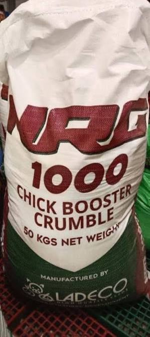
Quality poultry feed formulated to support the growth, health, and performance of chickens.
Starting at ₱35.00/kl
View Details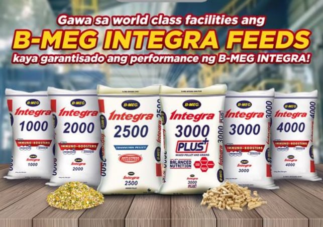
Poultry feed designed to provide essential nutrients for healthy and efficient chicken production.
Starting at ₱38.00/kl
View Details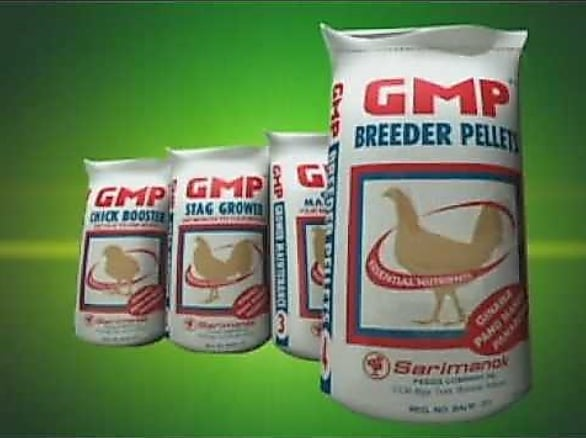
Poultry feed made to support proper nutrition, growth, and overall chicken performance.
Starting at ₱36.00/kl
View Details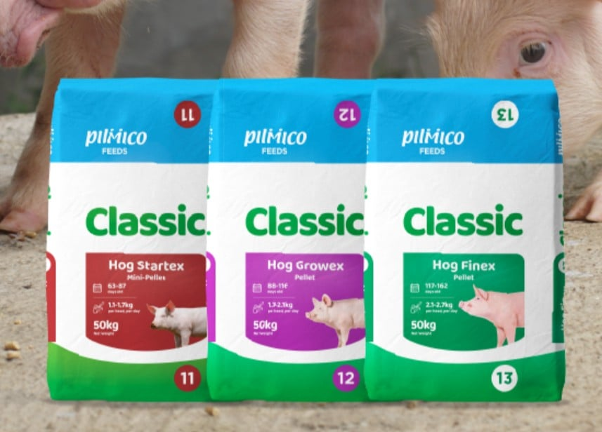
Quality feed for pigs formulated to provide proper nutrition and support healthy growth.
Starting at ₱38.00/kl
View DetailsNRG • Integra • GMP • Pilmico
We are committed to providing quality products and good service to help raisers and pet owners with their animal care needs.
We offer quality feeds, veterinary products, vitamins, equipment, and other supplies for different animals.
We aim to provide friendly and reliable service and assist our customers in choosing the products they need.
We help local raisers get the supplies they need without having to travel far to purchase their products.
We provide products and supplies for poultry, pigs, goats, cattle, dogs, and cats.
We value the trust and support of our customers. Here are some of the feedback from our customers.
"Maganda ang quality ng feeds at maayos kausap. Madali rin bumili dahil malapit lang sa amin."
"Complete ang mga kailangan namin para sa manok. Friendly din ang service at mabilis kausap."
"Convenient bumili dito at marami silang available na feeds at poultry supplies."
Take a look at Guinhawa Agri-Poultry Supply and some of the products and supplies available in our store.
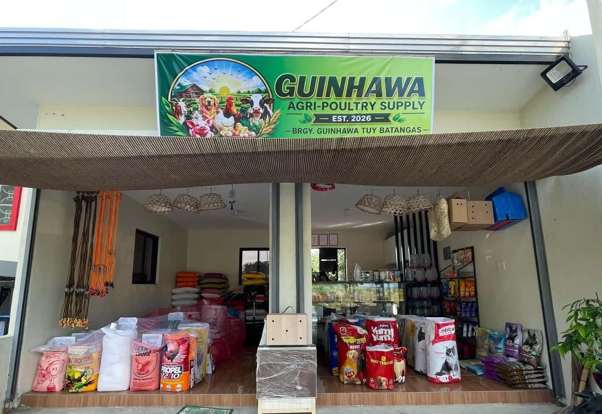
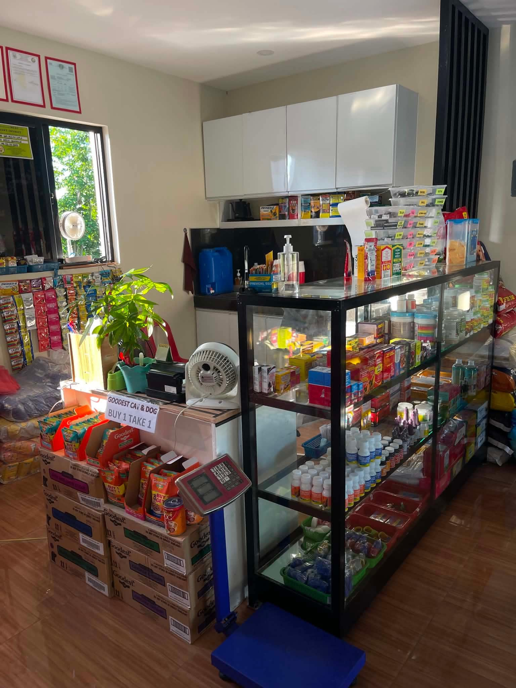
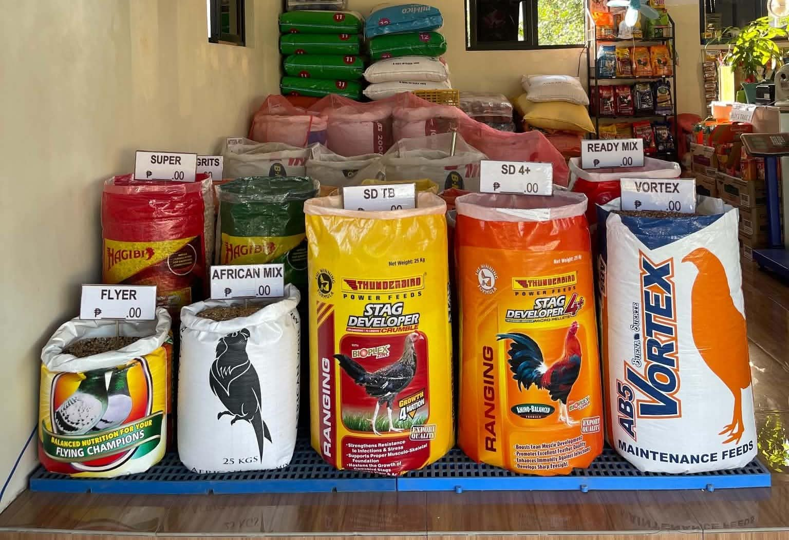
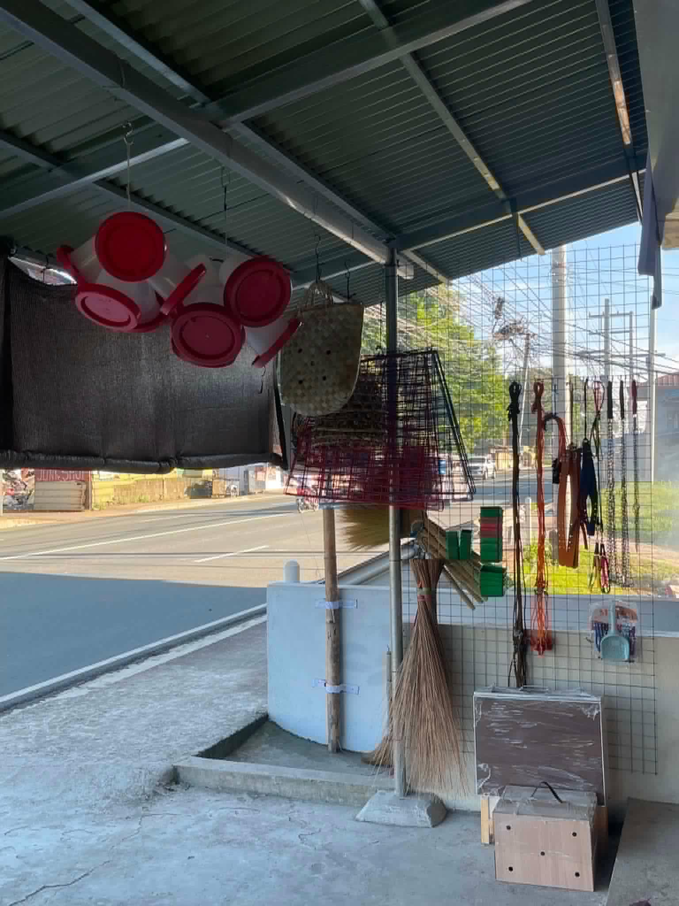
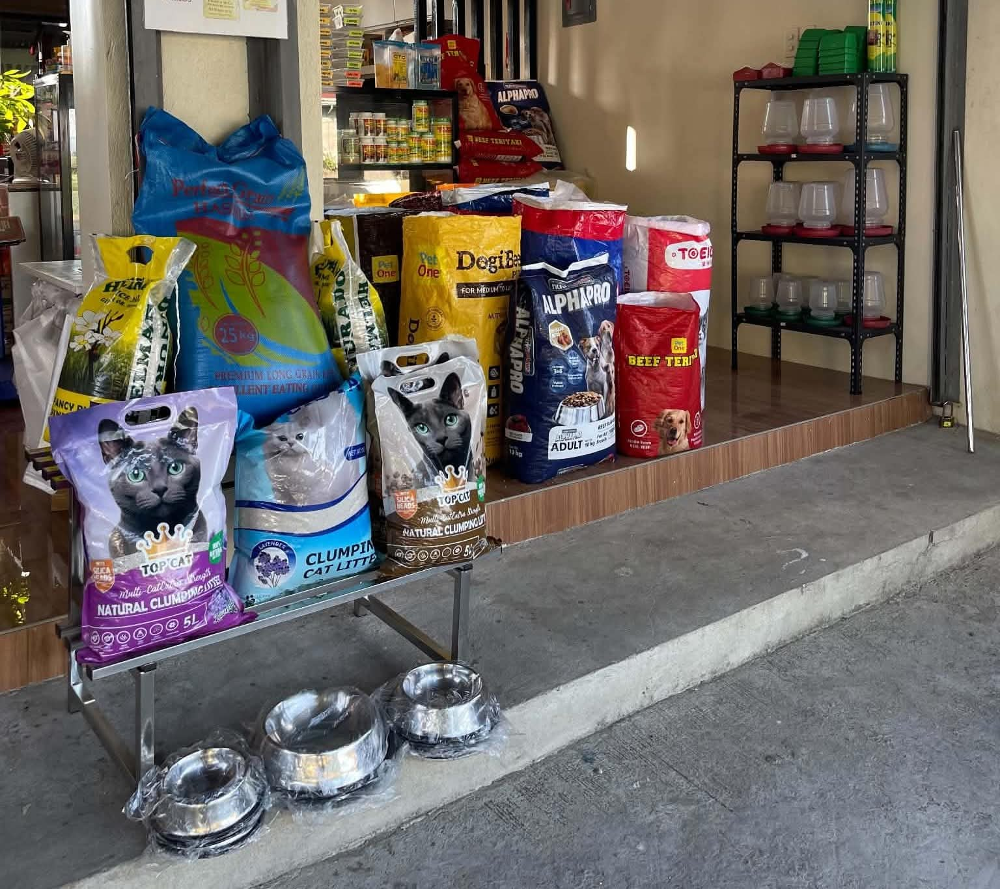
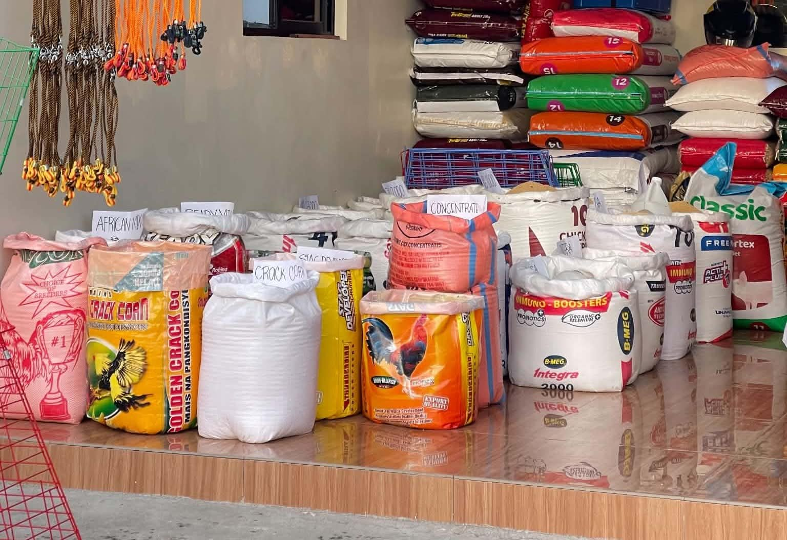
Have questions about our products? Feel free to contact us or visit our store in Guinhawa, Tuy, Batangas.
Brgy. Guinhawa, Tuy, Batangas
0945-463-3538
Monday – Saturday
6:00 AM – 6:30 PM
Sunday
6:00 AM – 5:00 PM
Have questions about our products, prices, or availability? Send us a message on our Facebook page and we will be happy to assist you.
Message Us on Facebook